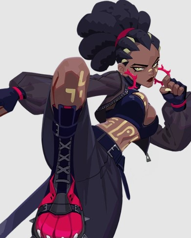
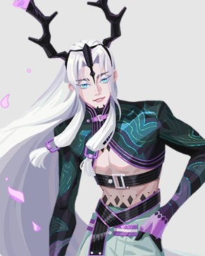
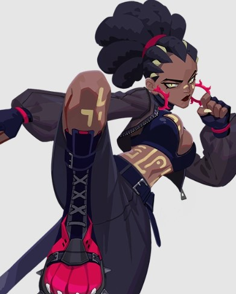
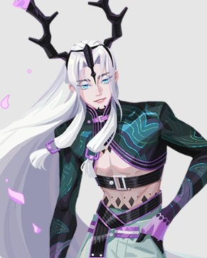

Fun Fact:
These are two Dislyte characters (Zelmer and Xiao Yin respectively) are my favourite charaters design-wise, which is why I used them for my favourite characters (Bee and Paris). Here's what they look like:
 
There are many different things that inspire me because really, there is no such thing as original art, as every original idea is a product of other pre-existing ideas.
I have a couple pinterest boards with art that inspires me. I usually pin art from a game called “Dislyte”, because I love how the art for the game is lineless, but also so detailed! This is something that is kind of hard to do with a lineless art style because it requires a lot of skills and knowledge in shape language, and anatomy. I kind of aspire to have a style like this for my Entomopedia comic because the colorful nature and the shape language used gives the vibes of the chaotic-but-organized nature that this comic is supposed to have. The style also gives a realistic sense (as humans are not actually outlined as portrayed in drawings with lineart), which goes well with the fact that Bee is just trying to live a normal life, and is a normal human being. It also contrasts well with the fact that the majority of the cast is not human.
These are two Dislyte characters (Zelmer and Xiao Yin respectively) are my favourite charaters design-wise, which is why I used them for my favourite characters (Bee and Paris). Here's what they look like:
 